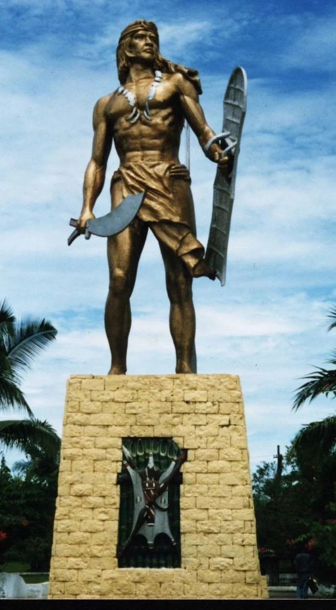
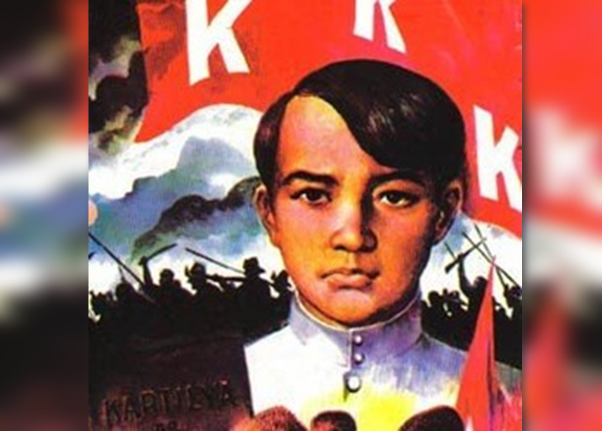
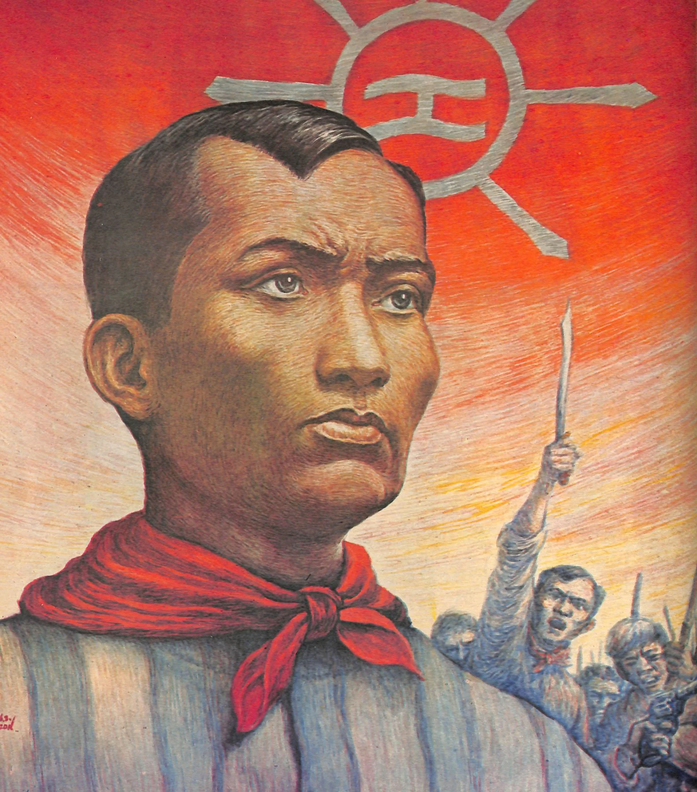
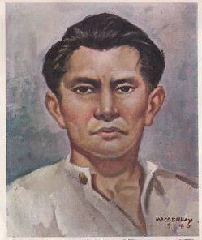
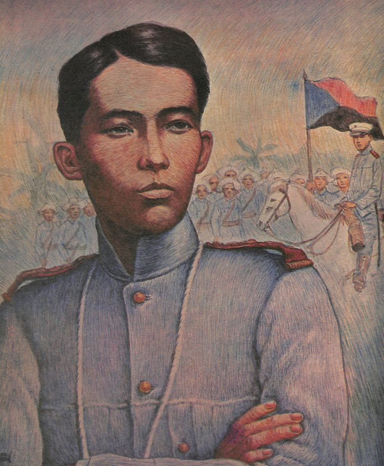

| Information | Photo with Date and Name |
| Lapu-Lapu, a city in the Philippines, is named after Chief Lapulapu, a national hero, and is a coconut-growing and fishing center with an international airport. | Lapu-Lapu |
| Don Jose Dizon adopted Emilio from a low-income family when he was born in 1875. He joined the Katipunan, learned law, and became Bonifacio's secretary and financial advisor in spite of the torture he endured. | Emilio Jacinto 12/5/1875 |
| Filipino patriot and Katipunan organization founder Andres Bonifacio led the uprising against Spanish authority in 1896 and pushed for independence; nonetheless, he was put to death for treason. | Andres Bonifacio 11/30/1863 |
| In the 18th century, Diego Silang, a well-known leader from the Philippines, used his linguistic skills as a leader and mediator to oppose Spanish colonial control. | Diego Silang 12/16/1730 |
| Born in Bulacan to Felipa Sempio, Gregorio Hilario del Pilar was a young general during the Philippine-American War who made a decisive stand at the Battle of Tirad Pass and successfully attacked the Spanish fortress of Cazadores. | Gregorio del Pilar 12/2/1899 |
https://alchetron.com/Lapu-Lapu#lapu-lapu-653cbce5-6c72-4784-9e79-537446c09ad-resize-750.jpeg
https://ar.inspiredpencil.com/pictures-2023/emilio-jacinto
https://www.tatlerasia.com/power-purpose/ideas-education/why-filipinos-celebrate-bonifacio-day
https://alchetron.com/Diego-Silang
https://alchetron.com/Gregorio-del-Pilar
James Micah F. Mamauag / 9E